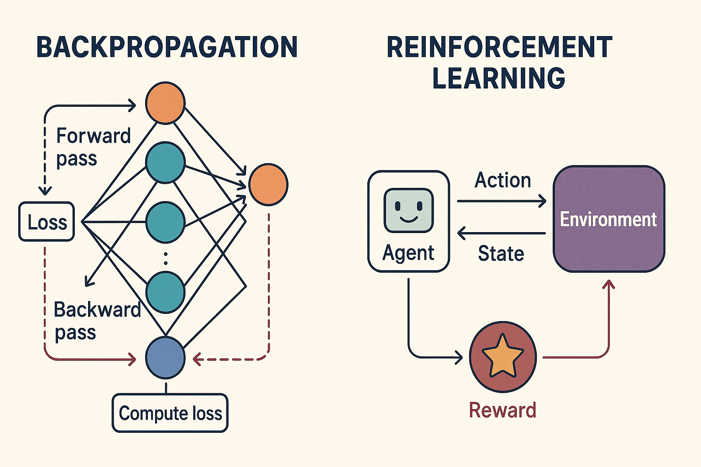

Optimization in Deep Learning: What It Is and Why It Matters
⸻
At its core, optimization in deep learning is the process of adjusting a neural network’s parameters—primarily its weights and biases—to make the model perform better on a given task. In practical terms, optimization determines how well a model can learn patterns from data and generalize to new, unseen examples.
Deep learning models, particularly deep neural networks, consist of layers with millions (or even billions) of parameters. These parameters define the mapping from input data (like images, text, or video) to outputs (like classifications, predictions, or generated content). But these parameters don’t start off knowing the “right” configuration. That’s where optimization comes in: it’s the method by which we iteratively adjust these parameters to minimize errors and improve the model’s predictions.
Purpose of Optimization in Deep Learning
Minimizing the Loss Function: Deep learning models are trained to minimize a loss function, a mathematical measure of how far the model’s predictions are from the actual targets. Optimization algorithms are responsible for finding the parameter values that produce the lowest possible loss.
Efficient Learning: Optimization ensures the network converges to a good solution in a reasonable amount of time. Without effective optimization, even a powerful model might fail to learn anything useful.
Generalization: Proper optimization helps models not only fit the training data but also generalize well to new, unseen data. Overfitting or underfitting can often be traced back to how the optimization process was handled.
Enabling Complex Architectures: Modern deep learning architectures, like transformers or convolutional networks, rely heavily on optimization to learn high-dimensional, nonlinear relationships in data. Without robust optimization strategies, these architectures would be impractical to train.
⸻
⸻
Neurons, Layers, and the Role of Optimization
In deep learning, a neuron is the fundamental processing unit of a neural network. Inspired by biological neurons, artificial neurons receive inputs, process them, and produce an output. These outputs are then passed to subsequent layers of neurons, allowing the network to gradually extract increasingly complex patterns from data.
Layers and Neurons
A neural network is organized into layers, with each layer containing a specific number of neurons. The first layer, called the input layer, receives raw data (text, images, audio, or other sensor data). Early neurons tend to detect simpler patterns, such as edges in images, basic phonemes in audio, or token frequencies in text. As information passes deeper into the network:
Hidden layers extract higher-level, more abstract features, like faces in images, semantic meaning in text, or complex patterns in time series data.
Output layers produce predictions or actions, such as class labels, generated sequences, or regression values.
Neurons, Layers, and Pattern Extraction Across Modalities
Once the types of input data are defined—1D sequences, 2D images, and 3D video/audio—the next question is: how does a neural network extract meaningful patterns from them? The answer lies in its neurons and layered architecture.
Neurons: The Fundamental Processing Units
Artificial neurons are inspired by biological neurons. Each neuron receives input signals, performs a transformation, and passes an output to subsequent neurons. In deep learning, neurons don’t process raw input in isolation—they work together across layers to detect increasingly complex patterns.
Pattern Extraction Across Modalities
1D Data (Text, Sequences, Sensor Data)
Early neurons in the first layers detect simple patterns, such as common word co-occurrences, token frequencies, or local trends in sensor readings.
Deeper neurons combine these simple patterns into more complex, abstract structures: phrases, semantic relationships, or predictive trends over time.
Specialized layers like recurrent networks, attention mechanisms, or transformers allow neurons to capture long-range dependencies across sequences.
⸻ ⸻
2D Data (Images)
Early convolutional neurons detect local spatial features like edges, corners, or textures.
Intermediate layers combine these features to identify higher-level components like shapes, objects, or facial features.
Deeper layers integrate all previous patterns into holistic representations, enabling object recognition or scene understanding.
⸻
⸻⸻
3D Data (Video, Spatiotemporal Signals)
Neurons must capture both spatial and temporal features.
Initial neurons detect local motion or changes in pixel patterns over time, while deeper neurons integrate movement sequences and interactions to recognize actions, events, or 3D structures.
Skip connections and residual layers help maintain crucial information from earlier layers, ensuring that the network can process large, complex spatiotemporal data efficiently.
⸻
⸻
Residual Layers and Skip Connections
These architectural features ensure that features extracted by early neurons aren’t lost. Residual layers add previous activations to the current layer, while skip connections concatenate features across layers, providing a rich, unified observation. This allows the model to maintain simple and complex patterns simultaneously, a crucial factor when processing multi-dimensional data.
Optimization as Neuronal Strengthening
Optimization algorithms—like gradient descent and its variants—adjust the weights of neurons to strengthen those that detect patterns leading to lower loss. Over time:
Neurons that consistently extract important features are reinforced.
Neurons that detect irrelevant or noisy patterns are weakened.
The network becomes increasingly selective, efficiently prioritizing the most informative patterns across modalities.
In essence, optimization sculpts the network, ensuring that neurons across all layers and modalities focus on the most predictive patterns, which leads to more intelligent, capable models.
Residual Layers and Skip Connections
Modern architectures often include residual layers and skip connections. These mechanisms allow neurons to retain and reuse previous features, ensuring that earlier information is not lost as data flows through deeper layers. This structure enables the network to process massive amounts of data across multiple modalities—text (natural language, code, mathematics, DNA), images and video (vision, time, audio), or standalone audio—while maintaining robust representations.
Optimization as Neuronal Strengthening
Optimization in deep learning is essentially the process of strengthening certain neurons over others. As the network learns, optimization algorithms adjust neuron weights to prioritize patterns that lead to lower loss. This selective reinforcement allows the network to focus on the most important features and relationships in the data. Over time, this process produces more intelligent models, capable of recognizing and generating complex patterns across modalities.
In short, neurons and layers provide the structure for pattern extraction, while optimization guides the network to learn which patterns matter most, steadily improving performance and generalization.
⸻
⸻
Understanding Modalities in Deep Learning
⸻
⸻
Deep learning models can process a variety of data types, organized into modalities. Each modality corresponds to a different kind of input structure:
1D Modalities – Text and Sequential Data
Description: Data organized as a sequence of elements along a single dimension (time or order).
Examples:
Text: Natural language, code, mathematics DNA sequences: Biological data
Sensor readings: Time series from IoT devices, accelerometers, or audio waveforms
Sub-modalities:
Language modeling, code completion, numerical sequences, or signal analysis
⸻
⸻
2D Modalities – Images
Description: Data structured in two dimensions, typically width × height.
Examples:
Photographs, scanned documents, X-rays
Sub-modalities:
RGB or grayscale channels, segmentation maps, heatmaps, feature maps
⸻
3D Modalities – Video (Spatiotemporal Data) Description: Data that extends across three dimensions: width × height × time (or another temporal axis). Examples: Videos, motion capture, volumetric medical scans
Sub-modalities: Vision with motion, audio-visual integration, sensor fusion, 3D point clouds evolving over time
Understanding these modalities is critical because neural architectures, neuron design, and optimization strategies differ depending on the dimensionality of the data. For instance, convolutional layers are highly effective for 2D images, while transformers excel in 1D text sequences. 3D data often requires spatiotemporal layers or specialized 3D convolutions to capture patterns across space and time simultaneously.
⸻
⸻

Optimization in State-of-the-Art Deep Learning
While many optimization techniques exist, state-of-the-art deep learning relies primarily on two methods to shape model intelligence and performance:
Backpropagation (Gradient-Based Optimization)
How it works: Backpropagation computes the gradient of the loss function with respect to each neuron’s weights, effectively measuring how changing a weight will affect the model’s error. These gradients are then used to update the weights, typically via gradient descent or its advanced variants (Adam, RMSProp, etc.).
Purpose: It allows the network to systematically strengthen neurons that detect useful patterns and weaken those that do not, across all layers.
Applications: Nearly all deep learning models—transformers for text, diffusion networks for images and spatiotemporal data (video) use backpropagation as the foundational learning mechanism.
Reinforcement Learning (RL), Especially Human-Guided RL
How it works: Instead of purely minimizing a predefined loss function, RL optimizes behavior based on rewards and penalties received from interacting with an environment. In human-guided RL (like RLHF—Reinforcement Learning from Human Feedback), human evaluators provide signals that guide the model toward preferred outputs.
Purpose: RL allows models to learn complex, context-dependent behaviors that may not be easily encoded in a standard loss function. This is crucial for state-of-the-art language models, multi-modal agents, and autonomous systems.
Applications: all generative models : Advanced LLMs (ChatGPT, Claude, Gemini, grok,) diffusion for image generation ( mid journey, stable diffusion,imagen ) diffusion for video generation ( veo 3, Klein, sora ) transformers variants for video generation like JEPA which is used for embodied AI All use RLHF to align outputs with human expectations, improving safety, usability, and reasoning capabilities.
⸻
Other Methods
While other optimization methods exist—such as evolutionary algorithms, second-order methods, or Hebbian-style learning—their role in modern, high-performance deep learning is secondary. They are sometimes used in research experiments, model initialization, or specialized architectures but do not generally define the state-of-the-art performance today.
⸻
⸻
The Essence of Optimization: Teaching the Model What Matters
At its core, optimization in deep learning is about teaching the model to focus on certain patterns over others—specifically, patterns that reduce the loss and lead to better predictions. In essence, optimization shapes the network’s “attention,” selectively strengthening neurons that detect useful features and weakening those that do not. Over time, this results in a model that appears more intelligent, because it consistently prioritizes the patterns that matter most.
A Useful Analogy: Tuning Radio Frequencies
Imagine trying to listen to one station on a radio, but there are billions of overlapping signals. Each neuron in a deep network is like a tuner for a particular signal: some extract important frequencies (patterns), while others may pick up noise. Since there are far too many patterns for humans to manually assign weights to each neuron, optimization provides an imprecise but effective way to “tune” the network automatically.
Why Neural Networks Are Called “Black Boxes”
People often describe neural networks as “black boxes.” While this is somewhat of an exaggeration, the term reflects a practical reality:
We rarely know exactly which neurons are being used for a given decision. We cannot fully trace which specific patterns the network relies on at every layer.
So while the network is not inherently mysterious—it is just a system of neurons processing patterns in layers—the sheer scale and complexity make its inner workings opaque to human inspection, especially in billion-parameter models.
This conceptual foundation makes it clear why optimization is critical: it’s the mechanism that automatically teaches the network which signals to amplify, and which to suppress, across all modalities and layers.